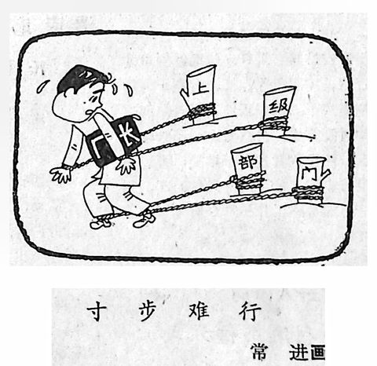
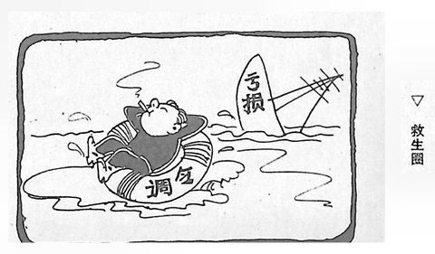
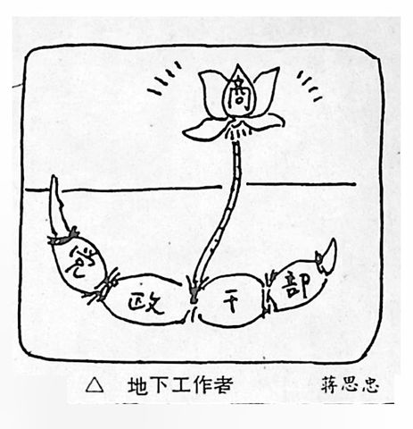

Reform and its implementation 17
-
 新班子 · The New Leadership Group
新班子 · The New Leadership Group
Quan Xiao 全笑. Renshi (Personnel), 1985 no. 2 (whole no. 2), p. 47. -
 算盘的联想 · Thoughts on an Abacus
算盘的联想 · Thoughts on an Abacus
Unattributed. Renshi (Personnel), 1986 no. 2 (whole no. 5), p. 43. Reprinted from Gongren ribao (Workers' Daily). -
 割比挖省劲多了 · Cutting Is Much Easier Than Digging
割比挖省劲多了 · Cutting Is Much Easier Than Digging
Unattributed. Renshi (Personnel), 1986 no. 6 (whole no. 9), p. 45. Reprinted from Fengci yu youmo (Satire and Humor). -
 缺档 · Missing Rungs
缺档 · Missing Rungs
Unattributed. Renshi (Personnel), 1986 no. 11 (whole no. 14), p. 41. -

寸步难行 · Unable to Move an Inch
Chang Jin 常进. Renshi (Personnel), 1987 no. 2 (whole no. 17), p. 17. -
 南郭现形 · Mr Nanguo Exposed
南郭现形 · Mr Nanguo Exposed
Shi Qingbin 石庆宾. Renshi (Personnel), 1987 no. 2 (whole no. 17), p. 43. -
 盲目引进 · Blind Importing
盲目引进 · Blind Importing
Ji Shunan 纪顺安. Renshi (Personnel), 1987 no. 2 (whole no. 17), inside back cover. -
 大家都讲“原则” · Everyone Talks “Principle”
大家都讲“原则” · Everyone Talks “Principle”
Zhao Yongzhen 赵永珍. Renshi (Personnel), 1987 no. 7 (whole no. 22), p. 46. -
 鲤鱼跳龙门 · The Carp Leaps the Dragon Gate
鲤鱼跳龙门 · The Carp Leaps the Dragon Gate
Wang Letian 王乐天. Renshi (Personnel), 1987 no. 7 (whole no. 22), inside back cover. -
 无题 · Untitled
无题 · Untitled
Wang Letian 王乐天. Renshi (Personnel), 1987 no. 10 (whole no. 25), p. 44. Reprinted from Renmin ribao, haiwai ban (People's Daily, Overseas Edition). -
 再放一点 · Lower It a Little More
再放一点 · Lower It a Little More
Man Hua 满化. Renshi (Personnel), 1987 no. 11 (whole no. 26), p. 30. -

救生圈 · Life Buoy
Wang Xiaogen 王小根. Renshi (Personnel), 1988 no. 1 (whole no. 28), inside back cover. -
 “垂帘听政” · “Ruling from Behind the Curtain”
“垂帘听政” · “Ruling from Behind the Curtain”
Sun Xiaoming 孙小鸣. Renshi (Personnel), 1988 no. 8 (whole no. 35), p. 37. -
 无题 · Untitled (“Cut any more and our section won't have enough hands”)
无题 · Untitled (“Cut any more and our section won't have enough hands”)
Sun Xiaoming 孙小鸣. Renshi (Personnel), 1988 no. 8 (whole no. 35), p. 37. -

地下工作者 · Underground Workers
Jiang Sizhong 蒋思忠. Renshi (Personnel), 1988 no. 12 (whole no. 39), inside back cover. -
 “公开” · “Open”
“公开” · “Open”
Supplied by Jiang Sizhong 蒋思忠. Renshi (Personnel), 1989 no. 11 (whole no. 50), inside back cover. -
 人事工作漫笔 · Sketches of Personnel Work
人事工作漫笔 · Sketches of Personnel Work
Sun Xiaoming 孙小鸣. Renshi (Personnel), 1990 no. 11 (whole no. 62), inside back cover.